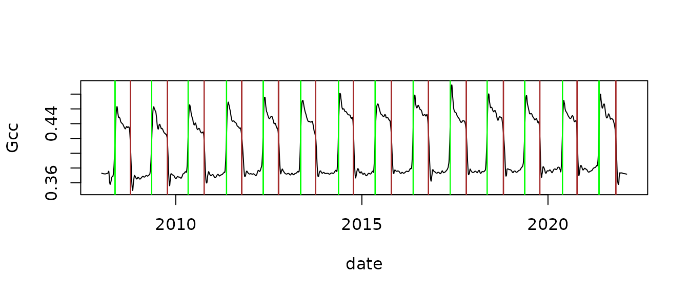

phenocamr-vignette.RmdA programmatic interface to the PhenoCam web services. Allows for easy downloads of PhenoCam near-surface remote sensing greenness (Gcc) time series directly to your R workspace or your computer. Post-processing allows for the smoothing of the time-series and the calculation of phenological transition dates as a final product.
The package gives access to the latest generated PhenoCam time series (at most 1-day old for running sites) and allows for the extraction of up-to-date phenological transition dates. However, the data acquired through the package will not be curated and vetted for data quality.
For a quality controlled and fully described dataset I suggest downloading the dataset as described by Richardson et al. (2018). This dataset uses the phenocamr packages in its final processing steps however quality control is gauranteed through careful review of the data. The data can be interactivly explored on explore.phenocam.us and downloaded in full from the ORNL DAAC. If in need of more recent data you can use the package and its functionality but be mindful of quality control especially the region-of-interest (ROI) used and potential unaccounted field-of-view (FOV) shifts in the dataset.
Below I describe the most common use of the package, downloading recent PhenoCam time series and generating phenological transition dates for a given site and data type. I intentionally disable most automated processing and step through some of the routines to illustrate the workflow which normally happens internally to the main function download_phenocam(). Generated transition date files can be used in later analysis or modelling exercises using for example the phenor R package.
A full list of meta-data for all sites can be queried using the list_sites() function.
sites <- list_sites()
head(sites)
#> wwf_biome nimage
#> 1 4 45153
#> 2 12 36615
#> 3 12 2639
#> 4 5 47757
#> 5 4 1452
#> 6 5 49555
#> site_acknowledgements
#> 1 Camera images from Acadia National Park are provided courtesy of the National Park Service Air Resources Program.
#> 2 Camera images from Agua Tibia Wilderness are provided courtesy of the USDA Forest Service Air Resources Management Program.
#> 3 Camera images from Agua Tibia Wilderness are provided courtesy of the USDA Forest Service Air Resources Management Program.
#> 4 Camera images from Yosemite National Park are provided courtesy of the National Park Service Air Resources Program.
#> 5
#> 6 Research at the Alligator River flux site is supported by DOE NICCR (award 08-SC-NICCR-1072), DOE-TES (awards 11-DE-SC-0006700 and 7090112), USDA Forest Service (award 13-JV-11330110-081) and USDA-NIFA (award 2014-67003-22068).
#> MAT_site date_end landcover_igbp koeppen_geiger site
#> 1 NA 2019-07-07 5 Dfb acadia
#> 2 NA 2019-01-25 7 Csa aguatibiaeast
#> 3 NA 2006-10-25 7 Csa aguatibianorth
#> 4 NA 2019-07-07 8 Csb ahwahnee
#> 5 NA 2015-10-13 13 Cfa alleypond
#> 6 16.6 2019-07-07 5 Cfa alligatorriver
#> infrared active MAT_daymet site_type lat ecoregion
#> 1 N TRUE 7.05 III 44.37694 8
#> 2 N TRUE 15.75 III 33.62200 11
#> 3 N FALSE 16.00 III 33.60222 11
#> 4 N TRUE 12.25 III 37.74670 6
#> 5 N FALSE 11.90 II 40.74284 8
#> 6 Y TRUE 16.75 I 35.78790 8
#> camera_description flux_sitenames tzoffset group
#> 1 unknown -5 National Park Service
#> 2 unknown -8 USFS
#> 3 unknown -8 USFS
#> 4 unknown -8 National Park Service
#> 5 StarDot NetCam SC -5 SmartForests
#> 6 StarDot NetCam SC US-NC4 -5 PhenoCam
#> contact1
#> 1 Dee Morse <dee_morse AT nps DOT gov>
#> 2 Ann E Mebane <amebane AT fs DOT fed DOT us>
#> 3
#> 4 Dee Morse <dee_morse AT nps DOT gov>
#> 5 Mary Martin <mary DOT martin AT unh DOT edu>
#> 6 Asko Noormets <noormets AT tamu DOT edu>
#> contact2 flux_data MAP_site
#> 1 John Gross <John_Gross AT nps DOT gov> FALSE NA
#> 2 Kristi Savig <KSavig AT air-resource DOT com> FALSE NA
#> 3 FALSE NA
#> 4 John Gross <John_Gross AT nps DOT gov> FALSE NA
#> 5 Nicholas Grant <ngrant02 AT fs DOT fed DOT us> FALSE NA
#> 6 John King <john_king AT ncsu DOT edu> TRUE 1310
#> camera_orientation secondary_veg_type date_start lon
#> 1 NE EN 2007-03-15 -68.26083
#> 2 SW 2007-08-16 -116.86700
#> 3 NE 2003-10-01 -117.34368
#> 4 E GR 2008-08-28 -119.58160
#> 5 S 2014-11-05 -73.74304
#> 6 N WL 2012-05-03 -75.90380
#> dominant_species
#> 1
#> 2
#> 3
#> 4
#> 5
#> 6 Nyssa sylvatica, Taxodium distichum, Nyssa aquatica, Acer rubrum
#> site_description elev
#> 1 Acadia National Park, McFarland Hill, near Bar Harbor, Maine 158
#> 2 Agua Tibia Wilderness, California 1086
#> 3 Agua Tibia Wilderness, California 1090
#> 4 Ahwahnee Meadow, Yosemite National Park, California 1199
#> 5 Alley Pond, Queens, New York 61
#> 6 Alligator River National Wildlife Refuge, North Carolina 1
#> MAT_worldclim MAP_worldclim MAP_daymet flux_networks method
#> 1 6.5 1303 1439 httppull
#> 2 14.9 504 483 httppull
#> 3 13.8 729 489 httppull
#> 4 11.8 886 871 httppull
#> 5 11.7 1109 1263 ftppush
#> 6 16.4 1312 1371 AMERIFLUX ftppush
#> primary_veg_type
#> 1 DB
#> 2 SH
#> 3 SH
#> 4 EN
#> 5 DB
#> 6 DBTo select a site first download an overview meta-data table of all available sites together with their ROI id’s and vegetation type and a limited set of meta-data parameters.
rois <- list_rois()
head(rois)
#> last_date roi_id_number site_years
#> 1 2017-09-20 1000 9.8
#> 2 2019-07-07 2000 1.5
#> 3 2011-10-14 1000 2.8
#> 4 2015-07-01 2000 3.2
#> 5 2019-07-07 3000 3.9
#> 6 2015-10-14 1000 0.7
#> description
#> 1 Deciduous trees in foreground center
#> 2 Mixed forest in foreground. Start new timeseries due to camera/FOV change.
#> 3 GR veg type in foreground. Multiple FOV shifts.
#> 4 GR veg type in foreground.
#> 5 GR veg type in foreground.
#> 6 understory plants
#> first_date lat veg_type missing_data_pct lon site
#> 1 2007-03-15 44.37694 DB 7 -68.26083 acadia
#> 2 2017-10-11 44.37694 DB 12 -68.26083 acadia
#> 3 2008-08-29 37.74670 GR 9 -119.58160 ahwahnee
#> 4 2012-05-01 37.74670 GR 0 -119.58160 ahwahnee
#> 5 2015-07-28 37.74670 GR 0 -119.58160 ahwahnee
#> 6 2014-11-04 40.74284 UN 24 -73.74304 alleypondThe below code shows you how to download a PhenoCam time series for the “harvard” site, ROI (roi_id) 1 and a time step frequency of 3-days. In this case the default outlier detection and smoothing routines has been disabled and will be run separately in subsequent steps. In normal use these will be enabled by default. The default output directory is tempdir() but any directory can be specified for data management purposes. If default settings are maintained, outlier detection and smoothing will be performed automatically. If so desired phenology dates can be estimated in one pass. In the latter case new data will be written in the same directory as specified for downloading the time series data.
download_phenocam(site = "harvard$",
veg_type = "DB",
roi_id = "1000",
frequency = 3,
outlier_detection = FALSE,
smooth = FALSE,
out_dir = tempdir())
#> Downloading: harvard_DB_1000_3day.csvAfter downloading we read in the data from disk. The data has a header and is comma separated.
df <- read_phenocam(file.path(tempdir(),"harvard_DB_1000_3day.csv"))
print(str(df))
#> List of 10
#> $ site : chr "harvard"
#> $ veg_type : chr "DB"
#> $ roi_id : chr "1000"
#> $ frequency : chr "3day"
#> $ lat : num 42.5
#> $ lon : num -72.2
#> $ elev : num 340
#> $ solar_elev_min: num 10
#> $ header : Named chr [1:24] NA NA NA "harvard" ...
#> ..- attr(*, "names")= chr [1:24] "#" "# 3-day summary product time series for harvard" "#" "# Site" ...
#> $ data :'data.frame': 4292 obs. of 32 variables:
#> ..$ date : chr [1:4292] "2008-01-05" "2008-01-06" "2008-01-07" "2008-01-08" ...
#> ..$ year : int [1:4292] 2008 2008 2008 2008 2008 2008 2008 2008 2008 2008 ...
#> ..$ doy : int [1:4292] 5 6 7 8 9 10 11 12 13 14 ...
#> ..$ image_count : int [1:4292] NA NA NA NA NA NA NA NA NA NA ...
#> ..$ midday_filename : chr [1:4292] NA NA NA NA ...
#> ..$ midday_r : num [1:4292] NA NA NA NA NA NA NA NA NA NA ...
#> ..$ midday_g : num [1:4292] NA NA NA NA NA NA NA NA NA NA ...
#> ..$ midday_b : num [1:4292] NA NA NA NA NA NA NA NA NA NA ...
#> ..$ midday_gcc : num [1:4292] NA NA NA NA NA NA NA NA NA NA ...
#> ..$ midday_rcc : num [1:4292] NA NA NA NA NA NA NA NA NA NA ...
#> ..$ r_mean : num [1:4292] NA NA NA NA NA NA NA NA NA NA ...
#> ..$ r_std : num [1:4292] NA NA NA NA NA NA NA NA NA NA ...
#> ..$ g_mean : num [1:4292] NA NA NA NA NA NA NA NA NA NA ...
#> ..$ g_std : num [1:4292] NA NA NA NA NA NA NA NA NA NA ...
#> ..$ b_mean : num [1:4292] NA NA NA NA NA NA NA NA NA NA ...
#> ..$ b_std : num [1:4292] NA NA NA NA NA NA NA NA NA NA ...
#> ..$ gcc_mean : num [1:4292] NA NA NA NA NA NA NA NA NA NA ...
#> ..$ gcc_std : num [1:4292] NA NA NA NA NA NA NA NA NA NA ...
#> ..$ gcc_50 : num [1:4292] NA NA NA NA NA NA NA NA NA NA ...
#> ..$ gcc_75 : num [1:4292] NA NA NA NA NA NA NA NA NA NA ...
#> ..$ gcc_90 : num [1:4292] NA NA NA NA NA NA NA NA NA NA ...
#> ..$ rcc_mean : num [1:4292] NA NA NA NA NA NA NA NA NA NA ...
#> ..$ rcc_std : num [1:4292] NA NA NA NA NA NA NA NA NA NA ...
#> ..$ rcc_50 : num [1:4292] NA NA NA NA NA NA NA NA NA NA ...
#> ..$ rcc_75 : num [1:4292] NA NA NA NA NA NA NA NA NA NA ...
#> ..$ rcc_90 : num [1:4292] NA NA NA NA NA NA NA NA NA NA ...
#> ..$ max_solar_elev : num [1:4292] NA NA NA NA NA NA NA NA NA NA ...
#> ..$ snow_flag : logi [1:4292] NA NA NA NA NA NA ...
#> ..$ outlierflag_gcc_mean: logi [1:4292] NA NA NA NA NA NA ...
#> ..$ outlierflag_gcc_50 : logi [1:4292] NA NA NA NA NA NA ...
#> ..$ outlierflag_gcc_75 : logi [1:4292] NA NA NA NA NA NA ...
#> ..$ outlierflag_gcc_90 : logi [1:4292] NA NA NA NA NA NA ...
#> - attr(*, "class")= chr "phenocamr"
#> NULLThe downloaded time series is of a 3-day resolution. However, to correctly evaluate the phenology on a daily time step the time series needs to be expanded to this one day time step. This can be achieved using the expand_phenocam() function.
After reading in the data as a data frame you can apply the outlier detection routine. This routine uses an iterative method to detect outlier values in the Gcc time series. This routine filters out most spurious values due contaminiation by snow, mist, rain or otherwise very bright events. Warnings are suppressed as the routine is iterative and might throw warnings if it does not converge on a solution. This has no implications for the routine and data returned.
After detecting outliers you can smooth the data. This function uses an AIC based methodology to find the opitmal loess smoothing window. Warnings are suppressed as the routine uses an optimization in which certain parameter settings return warnings. This has no implications for the routine and data returned.
Finally, if smoothed data is available you can calculate phenological transition dates. This routine uses a PELT changepoint detection based approach to find meaningful seasonal cycles in the data. By default start of growing season dates are returned. If the reverse parameter is set to TRUE the end of growing season dates are returned. Dates are formatted as unix time and will be provided for three default threshold values (10 / 25 / 50%) of the Gcc amplitude.
start_of_season <- transition_dates(df)
print(head(start_of_season))
#> transition_10 transition_25 transition_50 transition_10_lower_ci
#> 1 14002 14007 14014 14000
#> 2 14361 14366 14374 14357
#> 3 14719 14724 14730 14715
#> 4 15096 15101 15107 15093
#> 5 15452 15460 15467 15444
#> 6 15825 15828 15835 15823
#> transition_25_lower_ci transition_50_lower_ci transition_10_upper_ci
#> 1 14006 14012 14004
#> 2 14365 14372 14364
#> 3 14723 14728 14722
#> 4 15100 15105 15098
#> 5 15459 15465 15456
#> 6 15827 15833 15827
#> transition_25_upper_ci transition_50_upper_ci threshold_10 threshold_25
#> 1 14009 14015 0.37778 0.39230
#> 2 14369 14375 0.37727 0.38876
#> 3 14726 14731 0.37749 0.39024
#> 4 15103 15108 0.37990 0.39440
#> 5 15462 15468 0.38294 0.39674
#> 6 15831 15836 0.38256 0.39343
#> threshold_50 min_gcc max_gcc
#> 1 0.41959 0.36939 0.46404
#> 2 0.41847 0.36807 0.46226
#> 3 0.41821 0.36904 0.46474
#> 4 0.42145 0.37072 0.46791
#> 5 0.42737 0.37257 0.47722
#> 6 0.42526 0.37278 0.47088Alternatively you can use the phenophases() function which is a wrapper of the transition_dates() function. However, as it potentially writes data to disk it needs additional information such as the roi_id, site name etc. The phenophases() function is the function which generated the final data products in the Richardson et al. (2018) paper. If used internally the output will be formatted in unix time, when written to file the dates will be human readable in YYYY-MM-DD format. Both start and end of season estimates will be provided.
With the phenoogy dates calculated we can plot their respective locations on the smoothed time series. In this case the plot will show the 50% amplitude threshold values for both rising and falling parts of the 90th percentile Gcc curve, marked with green and brown vertical lines respectivelly.
plot(as.Date(df$data$date),
df$data$smooth_gcc_90,
type = "l",
xlab = "date",
ylab = "Gcc")
# rising "spring" greenup dates
abline(v = phenology_dates$rising$transition_50,
col = "green")
# falling "autumn" senescence dates
abline(v = phenology_dates$falling$transition_50,
col = "brown")
Hufkens K., Basler J. D., Milliman T. Melaas E., Richardson A.D. 2018 An integrated phenology modelling framework in R: Phenology modelling with phenor. Methods in Ecology & Evolution, 9: 1-10.